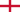

Чому Арсенал?
Усе своє життя я пов'язаний із футболом. Мій батько тренер, я сам займався футболом професійно до 22 років. Сьогодні ж, я просто люблю цей вид спорту і, як багато інших людей, маю свою улюблену команду, за яку вболіваю вже 23-й рік. Саме про неї я вирішив зробити свою першу HTML сторінку :)Про клуб
Футбольний Клуб «Арсена́л» (англ. Arsenal Football Club), або просто Арсена́л (англ. Arsenal) — англійський футбольний клуб з північного Лондона, є одним з найуспішніших клубів в англійському футболі. 13 разів ставав чемпіоном Англії, поступаючись за цим показником лише «Ліверпулю» і «Манчестер Юнайтед». Арсенал був заснований у 1886 році у Вулвічі на південному сході Лондона, але у 1913 році клуб переїхав на північ міста. Практично відтоді триває суперництво «Арсеналу» з північним сусідом «Тоттенгем Готспур», який базується на відстані лише чотирьох миль, матчі з яким є найзапеклішим північним лондонським дербі.
Герб
На першому гербі команди, представленому у 1888 році, було зображено три гармати, націлені вгору. Іноді їх плутають з димоходами, але оздоба у вигляді голови лева та каскабеля дають чітко зрозуміти, що зображено саме зброю. У 1913 році, після переїзду на Гайбері, герб був змінений, але через дев'ять років, у 1922 герб все ж відновили. Тоді замість трьох на емблемі залишили одну гармату, яка вказувала на схід, та додали напис — Зброярі. Але новий герб існував теж не довго, бо вже за три роки гармату «розвернули» на захід і трохи її модернізували. У 1949 році клуб представив нову емблему. Гармату лишили ту, що була на попередній емблемі, але назву команди було написано готичним письмом, а також вперше з'явився девіз латиною — Victoria Concordia Crescit (Перемога приходить з гармонією), яку вигадав Гаррі Гомер. Через численні зміни емблеми Арсенал фактично не володів авторськими правами на логотип. Та попри це команда все ж виграла позов на вуличного продавця, який реалізовував «неофіційну» символіку клубу. Та все ж лишилася потреба у правовому захисті. Тому у 2002 році було представлено нову емблему, з більш сучасними вигнутими лініями та спрощеним стилем. До 1960-х років емблема з'являлася на ігровій сорочці тільки з оказії гучних матчів, таких як фінал Кубка Англії і як правило у вигляді монограми ініціалів клубу на червоному та білому тлі. У сезоні 2011/12 Арсенал відзначив свій 125-річний ювілей. Свято передбачало і зміну емблеми на цілий сезон. Емблема була повністю біла та оточена 15 дубовими листочками з правого боку, і 15 листочків лаврового листя з лівого. Дубове листя символізувало 15 джентльменів, які зустрілися в пабі Королівський дубовий листок, а лаврове листя — вклад засновників клубу. Також лавровий листок мав додавати сили.

Досягнення
-
Внутрішні
-
Чемпіонат Англії
- Переможці (13): 1931, 1933, 1934, 1935, 1938, 1948, 1953, 1971, 1989, 1991, 1998, 2002, 2004
-
Кубок Англії
- Володарі Кубка (14): 1930, 1936, 1950, 1971, 1979, 1993, 1998, 2002, 2003, 2005, 2014, 2015, 2017, 2020
-
Суперкубок Англії
- Володарі (17): 1930, 1931, 1933, 1934, 1938, 1948, 1953, 1991 (обидва суперники), 1998, 1999, 2002, 2004, 2014, 2015, 2017, 2020, 2023
-
Кубок Футбольної ліги
- Володар (2) : 1987, 1993
-
Чемпіонат Англії
-
Європейські
-
Ліга чемпіонів УЄФА
- Фіналіст (1): 2006
-
Кубок володарів кубків УЄФА
- Володар (1) : 1994
-
Суперкубок УЄФА
- Фіналіст (1): 1994
-
Кубок УЄФА
- Фіналіст (1): 1999–00
-
Ліга Європи
- Фіналіст (1): 2018–19
-
Ліга чемпіонів УЄФА
Склад команди
-  Аарон Ремсдейл
-
 Кіран Тірні
Кіран Тірні
- Бен Вайт
-
 Томас Партей
Томас Партей
- Габріел
- Букайо Сака
- Мартін Едегор
- Габріел Жезус
- Еміл Сміт-Роу
- Габріел Мартінеллі
-
 Вільям Саліба
Вільям Саліба
- Едді Нкетіа
- Роб Голдінг
- Седрік Суареш
-
 Такехіро Томіясу
Такехіро Томіясу
- Фабіу Вієйра
- Альбер Самбі Локонга
- Ріс Нелсон
- Мохаммед Ель-Нені
- Маркіньйос
- Метт Тернер
- Карл Хейн
- Олександр Зінченко